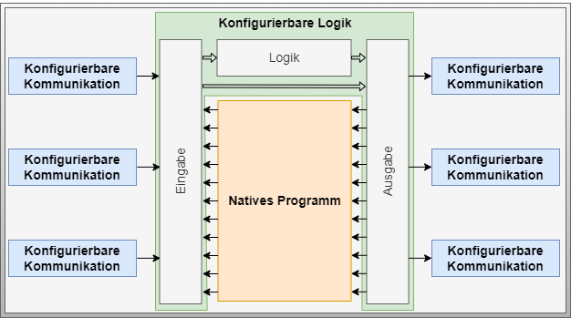

Active Choreography Participant
Artifact - Active Choreography Participant
Artifact Factsheet
| Fact Sheet | |
|---|---|
| Name | Active Choreography Participant |
| Artifact Type | Design Pattern |
| Target Users | System Architects, Software Architects, PLC Programmers |
| Objective | This artifact describes the necessary components to enable a controller to take on the tasks of an active choreography participant. The necessary sub-artifacts and their relationships are described. |
Relevant Publications
This section introduces the design pattern of the active choreography participant. Contents of this section are published in [SFB+21], [SBM+22], [StMa21], [StMa22], and [Stu23].
Artifact Description
The Active Choreography Participant design pattern consists of a sub-pattern for configurable communication and a sub-pattern for configurable logic, as well as the native program. The pattern is designed as a facade around the native program and can therefore be retrofitted into any existing program.

Artifact Building Blocks
Native Program
The native program (orange area in the figure) forms the component of a control system that implements the automated functions of the modular unit. Both proprietary and standardized approaches can be used for implementation. The use of standardized approaches is preferred as it reduces error susceptibility and increases the reusability of control solutions.
Configurable Logic
The Configurable Logic design pattern (green area in the figure) forms the program part responsible for configurable processing of available information. It represents the behavior-manipulating building block which is used to implement an active choreography participant.
Configurable Communication
The Configurable Communication design pattern (blue area in the figure) represents the program part used for configurable information exchange between choreography participants. It is allowed and advantageous to equip a control program with multiple different communication technologies. It is important that two participants each use the same technology to be interoperable.
Artifact Decisions
Separation of Responsibilities
Both an integral design and a modular design for implementing an active choreography participant were investigated. Following the principle of separation of responsibilities, the decision was made for the modularized variant. Configurable communication and configurable logic will therefore be developed in two independent patterns. This opens up an additional degree of freedom regarding communication, considering both openness and extensibility for different communication technologies, as well as the conscious decision not to prescribe any communication technology.
Retrofitability of Choreography Capability
The retrofitability of choreography-enabling components in the software of an active choreography participant's controller is essential. Following the idea of a facade pattern from software development, the implementation concept was designed analogously. It enables retrofitability with minimal impact on the native program. The clear separation between native program parts and added configurable program parts reduces effort in future requalification.
Artifact Implementation Details
The program part based on the Configurable Logic design pattern serves to process available information. Information made accessible to configurable logic is bundled and provided in the input, consisting of information from the native program and incoming information from configurable communication of other choreography participants.
Configurable logic continuously processes the information available to it, including input information, processing results from previous logic elements, and output information. The output of configurable logic uses these results and routes them either back to the native program or via communication channels to other choreography participants.
The program part based on the Configurable Communication design pattern serves information exchange with other choreography participants. Due to the variety of communication technology possibilities, this aspect is not elaborated further here. The possibilities and framework conditions for incoming and outgoing information of an active choreography participant are examined more deeply in the communication-specific artifacts.
Artifact Application
For choreography enablement of an industrial controller, the two described design patterns Configurable Logic and Configurable Communication must be embedded into the user program according to their description. The interconnection of the native control program and the input and output lists thus connects the functional components of the base program with the introduced choreography enhancements.
The information models for configuring both Configurable Logic and Configurable Communication are to be disclosed through a defined communication interface. For this purpose, an OPC UA server integrated into the controller is suitable. An OPC UA client can transmit the configuration to the corresponding OPC UA server via disclosed information models.